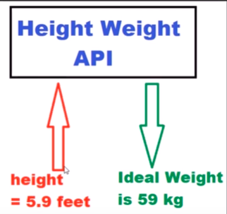
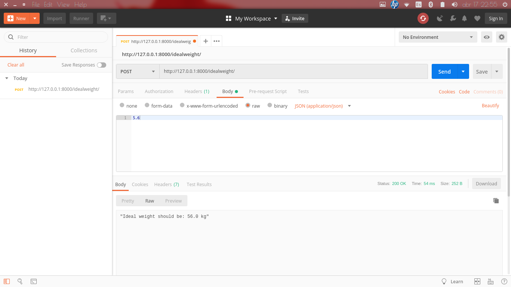

First install dependencies
$ pip install django djangorestframework
Inside project folder create a django project
$ django-admin startproject <project-name>
Inside the django project folder run the following command to create the web project folder (run with v3 of python).
$ python manage.py startapp <app-name>
Inside my django project folder and settings.py file under INSTALLED_APPS add two lines with
~~~~json 'rest_framework', 'MyApp' ~~~~
Then in views.py we will calculate the logic for calculating the ideal weight given the height. Replace with the following lines:
~~~~python from django.shortcuts import render from django.http import Http404 from rest_framework.views import APIView from rest_framework.decorators import api_view from rest_framework.response import Response from rest_framework import status from django.http import JsonResponse from django.core import serializers from django.conf import settings import json
@api_view(["POST"]) def IdealWeight(heightdata): try: height = json.loads(heightdata.body.decode('utf-8')) weight = str(height*10)
return JsonResponse("Ideal weight should be: " + weight + " kg", safe=False)
except ValueError as e:
return Response(e.args[0], status.HTTP_400_BAD_REQUEST)
~~~~
Then in urls.py add the url to access this method we just created.
~~~~python from django.contrib import admin from django.conf.urls import url from MyApp import views
urlpatterns = [ url(r'^admin/', admin.site.urls), url(r'^idealweight/', views.IdealWeight) ] ~~~~
After that, run the backend server using
$ python manage.py runserver
maybe this command throws an error and you have to migrate first
$ python3 manage.py migrate
If this throws an error of port already in use simply type:
$ sudo fuser -k 8000/tcp
Finally, to test the API we should install postman. In my case, using Ubuntu first install snap,
$ sudo apt install snapd snapd-xdg-open
and then postman (there are alternatives to this obviously)
$ snap install postman
